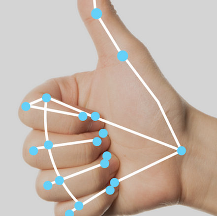

Outline
「Makeup」に関して
Zoomなどのビデオ通話アプリで使える映像加工アプリです
Webカメラから取得した映像に対して、目の拡大・口や鼻の変形などの顔加工をリアルタイムに適用し、仮想カメラを通じて配信できます。
Googleが開発したMediaPipeを用いることで、顔のランドマーク（目・口・輪郭などの位置）を検出し、映像加工を実装しています。

ダウンロードリンクはこちら
「使用した技術」
- フロントエンド：Tkinter(GUI)
- バックエンド：Python
- 外部ライブラリ：numpy, pyvirtualcam, OpenCV, MediaPipe
- デプロイ：PyInstaller
- 開発環境：Windows11, Python3.10.11, VScode, venv, GithubCopilot, OBSvirtualcam
- PCデバイス：CPU;Ryzen5 4500 , GPU;GeForce RTX 4060 , RAM;16GB , SSD;1TB
- WEBカメラ：DEPSTECH DW50PRO 4K Ultra HD 30fps
「使用した技術の概要」
Tkinter：Pythonの標準ライブラリ。GUIの作成
Python：バックエンド処理を担当
- numpy：画像データの数値配列処理、拡大縮小・変形時の演算
- pyvirtualcam：加工済み映像を仮想カメラとして出力し、Zoom等で使用可能に
- OpenCV：カメラ映像の取得、画像の前処理・後処理（色変換、ブラーなど）
- MediaPipe：顔の特徴点（ランドマーク）をリアルタイムで検出、Face Mesh モジュールで468点の顔の部位を認識
PyInstaller：アプリを.exeファイルとして配布可能に
OBSvirtualcam：映像をカメラ入力として他アプリに渡すためのもの
Demonstration
Makeupの使い方はこちら